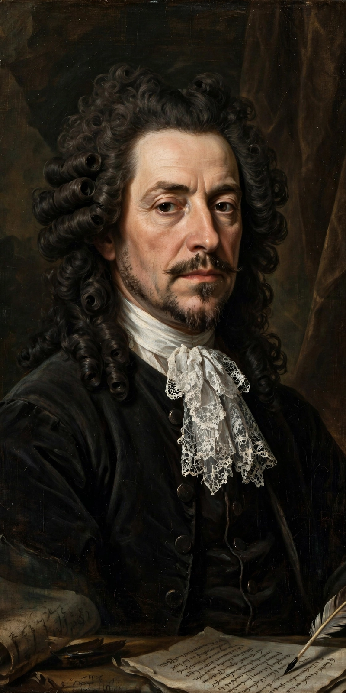

Wikipedia — The Free Encyclopedia

Jean-Baptiste Racine (22 December 1639 – 21 April 1699), known as Jean Racine, was a French dramatist, one of the three great playwrights of seventeenth-century France along with Molière and Corneille. A master of alexandrine tragedy, he is known for the psychological intensity and formal purity of plays such as Andromaque (1667), Britannicus (1669) and Phèdre (1677).
Orphaned young, Racine was educated free of charge by the Jansenists of Port-Royal, whose austere faith shaped him even during his worldliest years. After early success and rivalries — including a celebrated feud with the ageing Corneille — he was elected to the Académie française in 1672. In 1677, after the relative failure of Phèdre against a rival production, he largely abandoned the commercial theatre, married, became a royal historiographer to Louis XIV with Molière's successor Boileau, and returned to drama only with the biblical tragedies Esther (1689) and Athalie (1691), written for the schoolgirls of Saint-Cyr.
Racine's tragedies observe the classical unities with extreme economy: a single crisis, few characters, and verse of deceptive simplicity through which great passions — above all destructive love — unfold towards catastrophe. Where Corneille's heroes will themselves, Racine's are overwhelmed by forces within them, heredity, guilt and desire. His work dominated French tragedy for two centuries and remains central to the French repertoire.